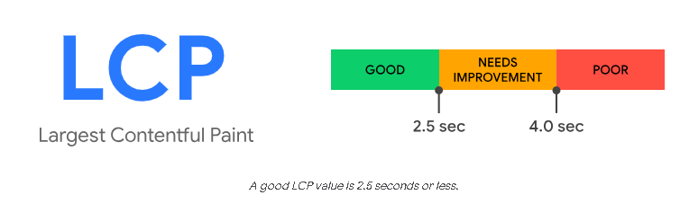
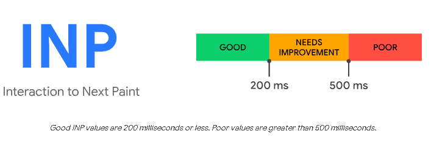
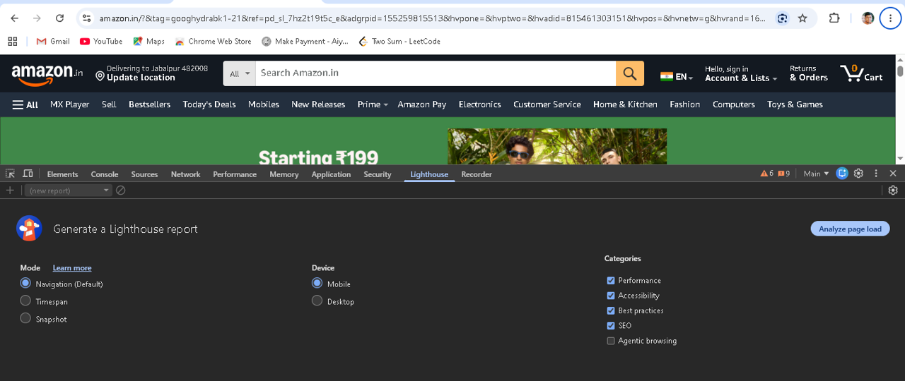

SEO & Core Web Vitals
What is SEO ?
- SEO ka full form hai: Search Engine Optimization
-
>Simple bhasha me: SEO ka matlab hai apni website ko Google, Bing, ya
AI search engines par upar lana. Wo bhi bina paise diye.
-
>"Organic" result ka matlab hai wo links jo ad nahi hote. Jaise tu
Google me "best phone under 20000" search karta hai, to jo pehle 3-4
links dikhte hain bina "Sponsored" likhe hue, wo SEO se aate hain.
SEO ka main goal kya hai?
-
Jitne log jo cheez search kar rahe hain, bilkul wahi cheez unko teri
website par mile.
- Isse teri site par sahi aur quality wala traffic aata hai.
What is Core Web Vitals ?
-
>Core Web Vitals, Google ke dwara banaye gaye 3 important score hain.
-
>Inse Google check karta hai ki kisi website ka user experience real
me kaisa hai.
-
>Ye direct Google ranking ka factor bhi hain. Matlab agar teri site ke
score acche honge to Google par teri website upar rank karegi.
Ye 3 cheezon par based hote hain:
- Loading Speed : (LCP - Largest Contentful Paint)
- Responsiveness : (INP - Interaction to Next Paint)
- Visual Stability : (CLS - Cumulative Layout Shift)
Core Web Vitals me 3 main measurement hote hain:
-
LCP - Largest Contentful Paint
-
Sabse bada content kitne time me load hota hai. Jaise image , bada
heading or video .
- Target: 2.5 sec ke andar load ho jana chaiye

-
INP - Interaction to Next Paint
-
Jab tu button ya link par click kare, to kitni jaldi response aata
hai.
- Target: 200ms ke andar response aa jana accha hota hai

-
CLS - Cumulative Layout Shift
-
Achanak layout me hone wale changes, user experience ko kaafi
kharab kar sakte hain.
-
Jaise, text achanak move ho jaye to padhte time user ko samajh
nahi aata ki wo kahan tha.
-
Iske alawa, galat link ya button par click ho jane ki wajah se bhi
user ka experience kharab ho sakta hai.
- Kuch cases me to isse bada nuksaan bhi ho sakta hai.
-
CLS, kisi bhi page ke poore lifecycle ke dauraan, achanak hone wale
har unwanted layout shift ka score calculate karti hai.
-
Jab bhi koi dikhne wala element, ek frame se dusre frame me apni
position change karta hai, tab layout shift hota hai.

What is LightHouse Report?
-
Lighthouse report ek detailed audit hota hai kisi bhi web page ka. Ye 4
cheezon ko check karta hai: Performance, Accessibility, SEO, aur Best
Practices. .
-
Ye 0 se 100 tak score deta hai. Jitna score zyada hoga, utni website ki
quality acchi maani jayegi
-
Report ke andar actionable suggestions bhi milte hain. Matlab ye batata
hai ki page ki speed aur standards ko improve karne ke liye kya kya fix
karna hai.
How to generate LightHouse Report?
-
Chrome browser open karo aur jis website ka test karna hai usko
kholo
- Right click > Inspect karo ya Ctrl + Shift + I dabao
- Upar "Lighthouse" tab par click karo
- DeviceDevice select karo: Mobile ya Desktop
-
Categories tick karo: Performance, Accessibility, Best Practices,
SEO
- "Analyze page load" button par click kar do
-
30-60 sec me report ban jayegi. Score + suggestions dono mil jayenge

Lighthouse Report Preview